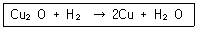
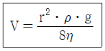
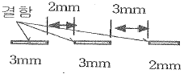

침투비파괴검사기사 (2014-05-25 기출문제)
1과목: 비파괴검사 개론
1. 다음 중 빛의 강도를 나타내는 단위는?
- m2/s
- W/m2
- N/m2
- ppm
(정답률: 76%)

2. 자분탐상시험, 침투탐상시험, 와전류탐상시험과 비교하여 방사선투과시험의 주요 장점이 아닌 것은?
- 주로 내부 결함의 검출에 이용된다.
- 시험체 재질의 밀도 변화를 검출할 수 있다.
- 검사 결과를 반영구적으로 기록할 수 있다.
- 작업자가 쉽게 시험체에 접근하여 측정할 수 있다.
(정답률: 77%)
3. 잔류응력을 비파괴적으로 측정이 가능한 응력ㆍ변형률 측정방법은?
- 광탄성 피막법
- 응력 도료막법
- 홀로그래피법
- 자기 스트레인 응력 측정법
(정답률: 79%)
4. 비파괴검사 중 육안 검사에 대한 설명으로 올바른 것은?
- 육안검사는 시험체에 가장 먼저 적용하는 검사법이다.
- 육안검사는 표면결함 및 내부결함을 검출 가능하다.
- 육안 검사자는 근거리 시력이 좋으면 색맹이어도 지장이 없다.
- 눈의 분해능은 강하며 항상 일정하다.
(정답률: 86%)
5. 비파괴검사 중 와전류탐상시험으로 검출이 용이한 것은?
- 유리판의 표면 결함
- 금속판의 열처리 상태
- 유리봉의 표층부 결함
- 플라스틱판의 표층부 결함
(정답률: 58%)
6. 입자분산강화금속(PSM)의 제조방법이 아닌 것은?
- 내부 산화법
- 열분해법
- 용융체 포화법
- 풀몰드 주조법
(정답률: 46%)
7. 로크웰 경도 시험에서 압입자의 각도는 얼마인가?
- 60도
- 120도
- 136도
- 145도
(정답률: 61%)
8. 마그네슘에 대한 설명으로 틀린 것은?
- 산에 침식된다.
- 비중은 3.74이다.
- 용융점은 약 650°C이다.
- 조밀육방격자 금속이다.
(정답률: 57%)
9. 주조용 알루미늄 합금과 그에 따른 명칭이 틀린 것은?
- 실루민(Silumin) : Al-Mg계 합금
- 라우탈(Lautal) : Al-Si-Cu계 합금
- 두랄루민(Duralumin) : Al-Cu-Mg-Mn계 합금
- 하이드로날륨(Hydronalium) : Al-Mg계 합금
(정답률: 62%)
10. Fe-C계 합금상태도에서 펄라이트(pearlite)가 형성되는 반응은?
- 공석반응
- 편석반응
- 공정반응
- 포정반응
(정답률: 41%)
11. 강의 조직 중에서 가장 큰 팽창을 하는 것은?
- 펄라이트(pearlite)
- 소르바이트(sorbite)
- 마텐자이트(martansite)
- 오스테나이트(austenite)
(정답률: 50%)
12. 주철에서 흑연화를 방해하는 원소는?
- Si
- Co
- Ni
- Cr
(정답률: 44%)
13. 가공용 알루미늄 합금 중 4000 번대는 어느 합금계 인가?
- Al-Cu계
- Al-Mn계
- Al-Si계
- Al-Mg계
(정답률: 53%)
14. 다음 중 감쇄능이 가장 우수한 재료는?
- 주강
- 금형강
- 공구강
- 회주철
(정답률: 66%)
15. 정련구리 중 보기와 같은 반응에 의해 나타나는 현상은?

- 열간균열
- 템퍼칼러
- 수소취성
- 구리의 산화
(정답률: 59%)
16. 피복아크 용접에서 용접봉의 융용속도를 가장 적합하게 나타낸 것은?
- 단위시간당 소비되는 용접봉의 길이 또는 무게
- 단위시간당 용착되는 용착금속의 총중량
- 1시간당 소비되는 용접봉의 무게
- 1일에 소비되는 용접봉의 총 중량
(정답률: 68%)
17. 용접봉의 종류 기호 중 고산화티탄계를 나타내는 것은?
- 4301
- 4311
- 4313
- 4316
(정답률: 54%)
18. 피복아크 용접봉에 사용되는 피복제 성분 중 아크 안정의 기능을 가지는 것은?
- 페로크롬
- 페로망간
- 산화니켈
- 규산칼륨
(정답률: 31%)
19. 다음 중 자분탐상 검사를 할 수 없는 금속판은?
- 연강판
- 니켈(Ni)판
- 코발트(Co)판
- 오스테나이트게 스테인리스강
(정답률: 56%)
20. 아크 용접에서 용접입열 30000 J/cm, 용접전압이 40V, 용접전류 125A 일 때 용접속도는 몇 cm/min인가?
- 10
- 20
- 30
- 40
(정답률: 58%)
2과목: 침투탐상검사 원리
21. 침투탐상시험시 용기에 담겨진 채로 사용되는 유화제의 성분으로 적합하지 않은 경우는?
- 인화점(flash point)이 낮아야 한다.
- 증발률의 낮아야 한다.
- 오염 영향이 적어야 한다.
- 독성이 없어야 한다.
(정답률: 74%)
22. 침투탐상시험에 사용되는 침투액은 일반적으로 어느 정도의 온도에서 침투능력이 떨어지며 예상 감도가 크게 저하 되는가?
- 38°C 이상
- 20°C~30°C
- 10°C 이하
- 18°C이하
(정답률: 67%)
23. 균열 검출에 사용 되는 두 종류의 침투제에서, 그들의 감도를 비교하는 방법으로 올바른 것은?
- 비중을 측정하기 위해 비중계를 사용한다.
- 균열이 존재하는 알루미늄 시편을 사용한다.
- 접촉각을 측정한다.
- 표면 장력을 측정한다.
(정답률: 65%)
24. 전처리 방법을 녹, 스케일, 도료 등의 고형화 된 오염물을 제거하는 방법으로 옳은 것은?
- 기계적인 방법으로 한 후 산이나 알칼리세척 페인트 제거제 등을 이용한다.
- 초음파 세척 후에 산이나 알칼리세척 페인트 제거제 등을 이용한다.
- 초음파 세척 후에 증기세척을 한다.
- 고온 가열 후에 초음파 세척을 한다.
(정답률: 57%)
25. 단속적으로 용접된 단조 겹침에서 나타날 수 있는 지시의 형태는?
- 넓고 연속적인 선으로 나타남
- 지시가 나타나나지 않음
- 매우 가늘고 연속된 선으로 나타남
- 단속적인 선으로 나타남
(정답률: 37%)
26. 속건식 현상제에 사용되는 백색분말의 재료로 사용되지 않은 것은?
- 산화마그네슘(MgO)
- 산화칼슘(CaO)
- 산화티탄(TiO2)
- 산화알루미늄(Al2O3)
(정답률: 39%)
27. 가시염색법으로 검사한 시험체에 대해서는 일반적으로 형광법으로 재검사를 안 하는데 그이유가 되지 못하는 것은?
- 거짓지시를 나타낼 수 있는 현상제가 탐상표면에 남아있기 때문인다.
- 대부분의 가시염료는 형광성을 가지고 있기 때문이다.
- 침투액을 섞어서 사용하면 안 되기 때문이다.
- 관찰이 어려워지기 때문이다.
(정답률: 52%)
28. 다음 중 아래 식에서 η가 의미 하는 것은? (단, V는 유동속도, r은 모세관의 반지름, ρ는 액체의 밀도, g는 중력가속도이다.)

- 액체의 높이
- 액체의 무게
- 액체의 접촉각
- 액체의 점도
(정답률: 63%)
29. 침투탐상검사에서 여러 개의 흩어진 점모양으로 나타나는 지시 모양은 다음 중 어느 결함에 연유하는가?
- 깊고 큰 터짐(crack)
- 얕고 가는 터짐
- 용접틈
- 주물에서의 표면기공(porosity)
(정답률: 74%)
30. 침투탐상검사에서 침투력에서는 영향이 없으나 침투액의 유동속도, 즉 침투액이 결함 속으로 침투하는 침투속도에 영향을 미치는 것은?
- 표면장력
- 적심성
- 모세관현상
- 점성
(정답률: 55%)
31. 성능이 좋은 침투제가 구비해야 할 조건은?
- 검사 부품과는 화학반응을 일으키지 않아야 한다.
- 점성이 커야 한다.
- 휘발성이 커야 한다.
- 무기용제의 액체이어야 한다.
(정답률: 64%)
32. 다른 침투 탐상시험과 비교하여 용제제거성 염색침투탐상시험의 주된 단점은?
- 탐상감도가 낮은 것이 단점이다.
- 전원을 필요로 하는 단점이 있다.
- 규정된 거치식 장비를 구비해야 하는 단점이 있다.
- 일광 또는 백열등 하에서 시험할 수 없는 단점이 있다.
(정답률: 73%)
33. 대형 부품의 전면을 탐상하고자 할 때 침투액을 균일하게 도포할 수 있고 침투액의 과잉 적용이 되지 않아 침투액의 손실을 최소화 하는 침투액의 적용방법은 무엇인가?
- 붓칠법
- 침지법
- 정전 분사법
- 에어졸 분사법
(정답률: 59%)
34. 일반적으로 대비시험편의 후처리 방법으로 적당하지 않은 것은?
- 공기의 분무
- 알칼리 용제세척
- 물 스프레이
- 브러싱
(정답률: 17%)
35. 침투액이 결함 내부로 침투되는 성질과 가장 관계가 깊은 용어는?
- 높은 점도
- 적심성
- 화학적 불활성
- 비중
(정답률: 58%)
36. 다음 중 침투 탐상 시험에서 흔히 나타나는 거짓지시의 원인으로 가장 비중이 큰 것은?
- 과잉 세척
- 부적절한 세척
- 시험품의 온도가 낮을 때
- 제조회사가 다른 침투제와 현상제를 적용할 때
(정답률: 56%)
37. 물을 분사시켜 과잉 침투제를 제거시키고자 할 때 균열에 들어있는 침투제는 어떤 특성을 갖고 있을 때 제거가 어려운가?
- 저점성
- 고점성
- 중간정도의 점성
- 점성은 문제가 되지 않음
(정답률: 57%)
38. 염색 침투탐상검사의 탐상원리에 속하지 않는 것은?
- 작은 불연속일경우에는 침투시간이 길어진다.
- 지시는 자외선등에 조사되었을 때 빛을 발산한다.
- 침투제가 불연속에서 씻겨나갈 경우에는 지시가 나타나지 않는다.
- 침투제는 지시를 나타내기 위해 불연속에 침투한다.
(정답률: 70%)
39. 후유화성 염색침투탐상시험에서 솔질법으로 유화제를 적용하는 방법으로 금길로 되어 있는데 그 주된 이유는?
- 관찰시 솔질 자국이 나타나기 때문
- 솔질법 자체는 좋으나 솔과 유화제가 반응하여 생성된 물질이 표면을 오염시키기 때문
- 유화제의 피막 형성이 원만하지 못하여 완전한 세척을 할수 없기 때문
- 유화제가 침투제에 섞이게 되어 유화시간의 조정을 어렵게 해주기 때문
(정답률: 45%)
40. 증기탈지법이 깊은 결함 속의 오염을 완전히 제거할 수 없는 이유로 가장 적합한 것은?
- 시험체의 온도가 너무 낮아서
- 증기탈지법은 세척성이 떨어지므로
- 접촉시간이 짧기 때문에
- 화학반응을 하지 않아서
(정답률: 33%)
3과목: 침투탐상검사 시험
41. 피로균열, 연삭균열 등 폭이 대단히 좁은 균열을 검출하기 위해 일반적으로 적용하는 침투탐상검사법이 아닌 것은?
- 수세성 형광침투탐상검사
- 후유화성 형광침투탐상검사
- 용제제거성 형광침투탐상검사
- 용제제거성 염색침투탐상검사
(정답률: 36%)
42. 침투탐상검사시 사용되는 전처리 용액중 인화점이 가장 높은 것은?
- 나프타
- 메탄올
- 벤젠
- 케로신
(정답률: 38%)
43. 소형의 알루미늄 주물품이 시험단계를 지나 양산단계에 이르렀을 때 적용하는 침투 탐상 검사로 가장 접합한 방법은?
- 수세법
- 물베이스 유화제법
- 용제법
- 기름베이서 유화제법
(정답률: 42%)
44. 다음 중 올바른 제거처리 방법은?
- 제거 처리의 기본은 단순한 곳부터 제거를 실시하여 복잡한 곳은 나중에 한다.
- 제거처리가 시작되면 처음에는 깨끗한 종이나 천에 세정제를 적셔서 깨끗이 닦아낸다.
- 천 또는 종이에 묻힌 세정제의 양은 가능한 소량으로하고, 검사면에 있는 세정제가 빠르게 건조되는 정도로 한다.
- 염색침투액과 형광침투액 모두 침투액의 색이 옅은정도에서 제거처리를 멈춘다.
(정답률: 37%)
45. 침투액과 구별하기 위해 유화제에 가장 널리 사용되는 착색은?
- 흑색 또는 황색
- 적색 또는 백색
- 녹색 또는 백색
- 오렌지색 또는 핑크색
(정답률: 46%)
46. 침투탐상검사시 시험체의 과도한 건조가 바람직하지 않은 가장 큰 이유는?
- 많은 시간이 소비되므로
- 시험감도가 저하될 수 있으므로
- 현상제의 흡수 능력이 상실되므로
- 과잉 침투액의 제가가 어려우므로
(정답률: 48%)
47. 침투탐상시험에서 의사모양이 생길 염려가 거의 없는 시험 방법은?
- 윙크자이글로(wink zyglo)
- 스트레스 자이글로(stress zyglo)
- 후유화성 형광침투탐상법
- 용제제거성 염색침투탐상법
(정답률: 40%)
48. 침투탐상검사법 중 침투제에 수분이 혼합되면 감도가 가장 현저하게 낮아지는 검사 방법은?
- 형광침투탐상(수세법)
- 형광침투탐상(유화제법-Lipophilic)
- 형광침투탐상(유화제법-Hydrophilic)
- 형광침투탐상(용제제거법)
(정답률: 44%)
49. 침투탐상검사에서 고온의 열에 방치되었던 세라믹 제품에 나타난 지시로서,망상모양(그물모양)의 서로 교차한 선으로 나타나는 지시는 무엇 때문에 발생한 것인가?
- 열충격에 의해 발생
- 피로균열에 의해 발생
- 수축균열에 의해 발생
- 연삭균열에 의해 발생
(정답률: 40%)
50. 형광침투탐상에 쓰이는 형광물질은 어느 파장에 가장 민감한가?
- 100nm
- 365nm
- 465nm
- 3900nm
(정답률: 65%)
51. 침투액의 성능 측정방법이 아닌 것은?
- 수세성시험
- 감도시험
- 수분함량시험
- 점성시험
(정답률: 33%)
52. 침투탐상검사의 건조처리에 관한 설명으로 틀린 것은?
- 고온에서 장시간 건조시키면 결함의 검출능력이 낮아진다.
- 일반적으로 용제세척을 수행한 경우는 가열 건조를 하지 않는다.
- 건조처리의 적용시기는 현상제 종류와 상관없이 세척방법에 따라 달라진다.
- 전열식 또는 적외선 건조는 국부적으로 가열되어 균일성이 낮아지므로 가능한 한 피하는 것이 좋다.
(정답률: 46%)
53. 침투액의 인화점이 낮은 경우 탐상검사에서 1차적으로 고려하여야 하는 것은?
- 화재의 위험성
- 표면장력의 정도
- 모세관현상의 정도
- 검사자의 마취성
(정답률: 66%)
54. 침투탐상시험결과 선상 결함 지시모양은 어떻게 구분하는가?
- 결함 지시모양의 길이가 지시의 폭과 같을 때
- 결함 지시모양의 길이가 지시 폭의 2배 이상
- 결함 지시모양의 길이가 지시 폭의 3배 이상
- 결함 지시모양의 길이가 지시 폭의 10배 이상
(정답률: 59%)
55. 침투탐상검사를 할 때 안전관리상 주의해야할 사항으로 옳지 않은 것은?
- 형광침투검사탐상시 적절한 필터를 사용하여 불필요한 광선을 걸러낸다.
- 뚜껑 없는 용기에 담아 사용하는 침투액은 인화점이 보통 120°F이하의 것을 요구한다
- 피부의 자극을 막기 위해 앞치마, 장갑 등을 사용하여 필요없는 접촉을 피한다.
- 건식현상제나 침투액의 증기가 있는 제한된 구역에는 환기를 시키는 팬을 설치한다.
(정답률: 69%)
56. 침투탐상검사로 검출이 가능한 결함에 대한 설명으로 옳은 것은?
- 표면 결함은 모두 탐상이 가능하다.
- 표면으로 열려 있는 균열 뿐 아니라 모든 결함을 탐상 될 수 있다.
- 표면 결함도 침투탐상검사로 탐상되지 않는 경우도 있다.
- 표면 및 표면직하 의 결함 탐상이 가능하다.
(정답률: 49%)
57. 동일한 탐상조건에서 가장 미세한 균열을 검출할 수 있는 방법은?
- 수세성 염색침투탐상검사
- 용제제거성 형광침투탐상검사
- 후유화성 염색침투탐상검사
- 후유화성 형광침투탐상검사
(정답률: 59%)
58. 사용 중에 발생되는 불연속이 아닌 것은?
- 피로균열
- 응력부식균열
- 핏팅(pitting)
- 라미네이션
(정답률: 52%)
59. 수세성 형광 침투액 및 건식 현상제를 사용하여 침투탐상시험을 할 경우 자외선조사장치가 반드시 필요한 시기는?
- 침투 및 관찰단계
- 세척 및 현상단계
- 현상 및 관찰단계
- 세척 및 관찰단계
(정답률: 46%)
60. 대비시험편의 사용목적이 옳지 않은 것은?
- 탐상제 제조자의 제품에 대한 품질관리
- 다른 탐상조건에서 탐상제의 성능 비교시험
- 사용 중인 탐상제의 품질과 성능의 유지관리
- 조작방법이나 조작조건의 적합여부 조사
(정답률: 40%)
4과목: 침투탐상검사 규격
61. 침투탐상 시험 방법 및 침투지시모양의 분류(KS B 0816)에 따라 압력용기를 침투탐상시험하였더니 그림과 같은 결함이 나타났다. 이 결함의 개수와 길이는?

- 1개의 결함 8mm
- 1개의 결함 13mm
- 3개의 결함 3mm, 3mm, 2mm
- 2개의 결함 8mm, 2mm
(정답률: 57%)
62. 보일러 및 압력용기에 대한 침투탐상검사(ASME Sec.V Art.6)에 따라 시험체의 일부분을 탐상시험하는 경우 전처리에 대한 설명으로 옳은 것은?
- 시험부위만 전처리한다
- 시험범위 바깥쪽으로 0.5인치 넓게 전처리한다.
- 시험범위 바깥쪽으로 1인치 넓게 전처리한다.
- 시험범위 바깥쪽으로 2인치 넓게 전처리한다.
(정답률: 64%)
63. 침투탐상 시험방법 및 침투지시모양의 분류(KS B 0816)에 따라 시험기록에 시험 온도를 반드시 기재하여야 하는 경우는?
- 20°C이하일 때
- 30°C이상일 때
- 40°C이상일 때
- 50°C이상일 때
(정답률: 51%)
64. 보일러 및 압력용기에 대한 침투탐상검사(ASME Sec.V Art.6)에 따라 티타늄 재질을 탐상할 때 반드시 침투액의 오염을 측정하여야 하는 물질은?
- 불소
- 유황
- 질소
- 니켈
(정답률: 31%)
65. 침투탐상 시험방법 및 침투지시모양의 분류(KS B 0816)에 의한 침투탐상시험시 선상 침투지시모양이란?
- 결함 길이가 나비의 1배 이상인 것
- 결함 길이가 나비의 2배 이상인 것
- 결함 길이가 나비의 3배 이상인 것
- 결함 상호간 거리가 2mm 이상인 결함
(정답률: 56%)
66. 침투탐상 시험방법 및 침투지시모양의 분류(KS B 0816)에서 규정한 시험방법에 대한 분류로써 틀린 것은?
- 용제제거성 염색침투탐상 - VC
- 후유화성 형광침투탐상 - FB
- 수세성 염색침투탐상 - VA
- 용제제거성 형광침투탐상 - FD
(정답률: 60%)
67. 보일러 및 압력용기에 대한 표준침투탐상검사(ASME Sec V Art.24 SE-165)에 따라 친수성 유화제를 침지법으로 적용할 때 방법으로 틀린 것은?
- 침지용액에 부품이 완전히 잠기게 하고 부드럽게 저어준다.
- 유화제 농도는 제조자 권고를 따르며, 대부분 물과 대비하여 20~33%로 한다.
- 물의 온도는 40°C 이상을 유지한다.
- 침지시간은 허용할 수 있는 배경이 형성될 수 있는 최소시간으로 하며 120초 혹은 부품제조 사양에서 권고하는 최대시간을 넘지 않도록 한다.
(정답률: 48%)
68. 침투탐상 시험방법 및 침투지시모양의 분류(KS B 0816)을 15~50°C 온도범위에서 침투시간을 10분으로 하는 시험체는?
- 알루미늄 주조품의 빈 틈새
- 철강 단조품의 랩
- 세라믹스의 갈라짐
- 강용접부의 융합불량
(정답률: 49%)
69. 보일러 및 압력용기에 대한 침투탐상검사(ASME Sec V Art.6)에 따라 형광침투액을 사용하는 경우 관찰장치로서 반드시 설치하여야하는 것은?
- 조도계
- 광전 형광계
- 자외선조사장치
- 시험체의 표면온도를 측정하기 위한 온도계
(정답률: 54%)
70. 보일러 및 압력용기에 대한 표준침투탐상검사(ASME Sec V Art.24 SE-165)에 따라 검사를 수행한 후 후처리에 관한 설명으로 틀린 것은?
- 잔존하는 침투제나 현상제가 이어지는 후 공정에 영향을 미칠 때 필요하다.
- 잔존하는 침투제가 다른 성분들과 결합하여 사용중 부식을 유발할 수 있는 경우 필요하다.
- 적당한 후처리 방법으로는 물세척, 증시탈지, 용제세척등이 있으면, 특히 증기탈지는 현상제 제거에 좋다.
- 현상제 제거 요구가 있다면 부품에 고착화되기 전에 검사완료 후 즉시 하는 것이 좋다.
(정답률: 46%)
71. 침투탐상 시험방법 및 침투지시모양의 분류(KS B0816)에서 침투탐상시험을 전수 검사하여 합격한 시험체에 대한 표시방법으로 틀린 것은?
- 시험체에 각인이나 부식시켜 P 기호 표시
- 착색(적갈색)에 의해 시험체에 P 기호 표시
- 시험체에 P기호 표시할 수 없을 때에는 황색으로 착색
- 시험체에 표시 할 수 없는 경우 시험 기록에 기재한 방법에 따름
(정답률: 56%)
72. 항공우주용 기기의 침투탐상 검사방법(KS W 0914)에 따른 탐상시험시 특별한 지시가 없을 때 후유화성(친유성) 형광침투제에 유화제를 적용한 후 몇 분이내에 세척하여야 하는가?
- 1분
- 3분
- 5분
- 10분
(정답률: 36%)
73. 침투 탐상 시험방법 및 침투지시모양의 분류(KS B 0816)에 규정한 관찰방법으로 틀린 것은?
- 침투지시모양의 관찰은 현상제 적용 후 7~60분 사이에 하는 것이 바람직하다.
- 형광침투액은 관찰하기 전에 1분 이상 어두운 곳에서 눈을 적응시킨다.
- 염색침투액의 사용시 시험면 밝기는 800μW/cm2이상인 자연광 또는 백색광 하에서의 관찰이 바람직하다.
- 침투지시모양이 나타났을 때 결함침투지시모양인지 의사지시인지를 확인하여야한다.
(정답률: 51%)
74. 항공우주용 기기의 침투탐상 검사방법(KS W 0914)에 따른 침투탐상 시험에서 사용되는 친유화성 유화제는 ASTM D95에 따라 수분 함유량을 점검하도록 규정하고 있는데, 수분의 부피비가 몇%를 초과할 때, 불만족한 것으로 간주하는가?
- 1%
- 5%
- 10%
- 20%
(정답률: 24%)
75. 보일러 및 압력용기에 대한 표준침투탐상검사(ASME Sec.V Art24 SE-165)에서 특별한 지시가 없는 한 탐상시험시 권고되는 시험체의 최대 표면온도는 얼마인가?
- 26°C
- 38°C
- 58°C
- 75°C
(정답률: 43%)
76. 항공우주용 기기의 침투탐상 검사방법(KS W 0914)에 따라 정치식 형광침투탐상검사(타입 Ⅰ)인 경우 주위 배경의 백색광의 허용되는 최대 밝기는?
- 10 lx
- 15 lx
- 20 lx
- 25 lx
(정답률: 64%)
77. 보일러 및 압력용기에 대한 침투탐상검사(ASME Sec.V Art.6)에서 검사절차서를 개정할 필요가 없는 경우는?
- 침투액, 현상액, 세척액의 종류가 변경될 때
- 전처리 방법이 변경될 때
- 검사 요원이 변경될 때
- 검사 방법이 변경될 때
(정답률: 72%)
78. 침투탐상 시험방법 및 침투지시모양의 분류(KS B 0816)에 따른 침투액의 점검 내용으로 틀린 것은?
- 사용중인 침투액의 성능시험을 하여 결함검출능력이 저하된 경우 폐기한다.
- 사용중인 침투액의 성능시험을 하여 침투지시 모양, 휘도저하, 색상이 변한 경우 우선 먼저 사용한다.
- 사용중인 침투액의 겉모양 검사를 하여 현저한 흐림이나 침전물이 생겼을 때 폐기한다.
- 사용중인 침투액의 겉모양 검사를 하여 형광휘도의 저하, 색상의 변화, 세척성의 저하 등이 인정되었을 때 폐기한다.
(정답률: 57%)
79. 보일러 및 압력용기에 대한 침투탐상검사(ASME Sec.V Art.6)에서 탐상시험은 문서화된 절차서에 따라야 한다. 다음 중 이 절차서에 포함되어야 하는 최소한의 요구사항에 해당되는 않는 것은?
- 탐상제의 종류
- 탐상제의 적용방법
- 시험체의 용도
- 관찰용 조명등의 최소 강도
(정답률: 62%)
80. ASME Sec.Ⅷ, Div.1에 규정한 침투탐상 지시에 대한 설명으로 틀린 것은?
- 균열은 불합격으로 한다.
- 선형지시는 불합격으로 한다.
- 1/8인치를 초과하는 원형지시는 불합격으로 한다.
- 동일 선상으로 1/16인치 분리된 4개 이상의 원형지시는 불합격으로 한다.
(정답률: 31%)